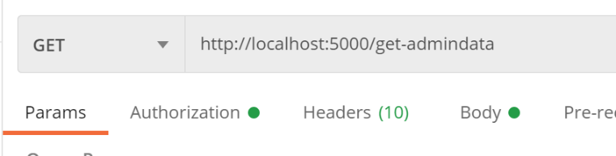

29. Exercice d’application : version 11
29.1. Introduction
Dans les versions précédentes de l’application client / serveur de calcul de l’impôt, la couche [métier] qui implémente les règles métier de ce calcul était côté serveur. On se propose maintenant de la déplacer côté client. Quel est l’intérêt ? Du travail que faisait le serveur va être déplacé côté client. Si on pense à la situation d’un serveur interrogé par N clients, N calculs métier de l’impôt seront faits par les clients. Dans les versions précédentes, le serveur faisait ces N calculs métier. Parce qu’il ne fait plus le calcul métier, le serveur va répondre plus rapidement à ses clients et va alors pouvoir en servir davantage simultanément.
L’architecture client / serveur devient la suivante :

- la couche [métier] [10] a été dupliquée [12] sur le client ;
- un nouveau script [main2] [11] a été ajouté au client ;
Le client web aura deux façon de calculer l’imppôt de la liste de contribuables trouvée en [3] :
- utiliser la méthode de la version précédente. Il utilise la couche [métier] [10] du serveur. Le script [main] utilisera cette méthode ;
- se contenter de demander au serveur les données de l’administration fiscale [2-4] puis utiliser la couche [métier] [12] locale au client ;
Nous comparerons les performances des deux méthodes.
29.2. Le serveur web
L’arborescence du serveur web sera la suivante :

- le dossier [http-servers/06] est initialement obtenu par recopie du dossier [http-servers/05]. On va en effet conserver l’acquis de la version 10 précédente. On va simplement lui ajouter une nouvelle fonctionnalité. Celle-ci est matérialisée par la présence d’un nouveau contrôleur [get_admindata_controller] [1]. L’autre contrôleur [calculate_tax_controller] n’est autre que l’ancien contrôleur [index_controller] qui a été renommé ;
29.3. Configuration
Le serveur offrira deux URL de service :
- [/calculate-tax] pour calculer l’impôt d’une liste de contribuables passée dans le corps d’un POST. Elle correspond donc à l’URL [/] de la version 10 précédente ;
- [/get-admindata] délivre la chaîne jSON des données de l’administration fiscale ;
La configuration [config] associe chacune de ces URL au contrôleur qui la traite :
# dictionnaire des contrôleurs de l'application web
import calculate_tax_controller, get_admindata_controller
controllers = {"calculate-tax": calculate_tax_controller, "get-admindata": get_admindata_controller}
config['controllers'] = controllers
29.4. Le script principal [main]
Le script principal [main] restructure le script [main] de la version précédente :
# on attend un paramètre mysql ou pgres
import sys
syntaxe = f"{sys.argv[0]} mysql / pgres"
erreur = len(sys.argv) != 2
if not erreur:
sgbd = sys.argv[1].lower()
erreur = sgbd != "mysql" and sgbd != "pgres"
if erreur:
print(f"syntaxe : {syntaxe}")
sys.exit()
# on configure l'application
import config
config = config.configure({'sgbd': sgbd})
# dépendances
…
# récupération des données de l'administration fiscale
erreur = False
try:
# admindata sera une donnée de portée application en lecture seule
config["admindata"] = config["layers"]["dao"].get_admindata()
# log de réussite
logger.write("[serveur] connexion à la base de données réussie\n")
except ImpôtsError as ex:
# on note l'erreur
…
…
# s'il y a eu erreur on s'arrête
if erreur:
sys.exit(2)
# l'application Flask peut démarrer
app = Flask(__name__)
# contrôleur principal
def main_controller() -> tuple:
# on récupère l'action demandée
dummy, action=request.path.split('/')
logger = None
try:
# logger
logger = Logger(config["logsFilename"])
# on le mémorise dans une config associée au thread
thread_config = {"logger": logger}
thread_name = threading.current_thread().name
config[thread_name] = {"config": thread_config}
# on logue la requête
logger.write(f"[index] requête : {request}\n")
# on interrompt le thread si cela a été demandé
sleep_time = config["sleep_time"]
if sleep_time != 0:
# la pause est aléatoire pour que certains threads soient interrompus et d'autres pas
aléa = randint(0, 1)
if aléa == 1:
# log avant pause
logger.write(f"[index] mis en pause du thread pendant {sleep_time} seconde(s)\n")
# pause
time.sleep(sleep_time)
# on fait exécuter la requête par le contrôleur de la requête
controller = config['controllers'][action]
résultat, status_code = controller.execute(request, config)
# y-a-t-il eu une erreur fatale ?
if status_code == status.HTTP_500_INTERNAL_SERVER_ERROR:
# on envoie un mail à l'administrateur de l'application
config_mail = config["adminMail"]
config_mail["logger"] = logger
SendAdminMail.send(config_mail, json.dumps(résultat, ensure_ascii=False))
# on logue la réponse
logger.write(f"[index] {résultat}\n")
# on envoie la réponse
print(résultat)
return json_response(résultat, status_code)
except BaseException as erreur:
# on logue l'erreur si c'est possible
if logger:
logger.write(f"[index] {erreur}")
# on prépare la réponse au client
résultat = {"réponse": {"erreurs": [f"{erreur}"]}}
# on envoie la réponse
return json_response(résultat, status.HTTP_500_INTERNAL_SERVER_ERROR)
finally:
# on ferme le fichier de logs s'il a été ouvert
if logger:
logger.close()
# calcul de l'impôt
@app.route('/calculate-tax', methods=['POST'])
@auth.login_required
def calculate_tax():
# on passe la main au contrôleur principal
return main_controller()
# obtenir les données de l'administration fiscale
@app.route('/get-admindata', methods=['GET'])
@auth.login_required
def get_admindata():
# on passe la main au contrôleur principal
return main_controller()
# main uniquement
if __name__ == '__main__':
# on lance le serveur
app.config.update(ENV="development", DEBUG=True)
app.run(threaded=True)
- lignes 88-93 : la fonction [calculate_tax] traite l’URL [/calculate-tax] ;
- lignes 95-100 : la fonction [get_admindata] traite l’URL [/get-admindata] ;
- ces deux fonctions ne font rien par elles-mêmes. Elles passent immédiatement la main au contrôleur principal [main_controller] des lignes 37-86 ;
- lignes 37-86 : le contrôleur principal [main_controller] n’est rien d’autre que la fonction [index] de la version précédente à un détail près : là où la fonction [index] ne traitait qu’une unique URL, ici [main_controller] traite deux URL. Il lui faut donc faire traiter celles-ci par l’un des deux contrôleurs [calculate_tax_controller, get_admin,data_controller] ;
- lignes 39-40 : on récupère l’action demandée [calculate_tax] ou [get_admindata]. Cette information est dans le chemin de l’URL [request.path]. Selon les cas, [request.path] vaut [/get-admindata] ou [/calculate_tax]. Le split de la ligne 40 va donner deux éléments :
- la chaîne vide pour la partie qui précède le / ;
- le nom de l’action demandée pour la partie qui suit le / ;
- lignes 62-63 : une fois l’action de l’URL récupérée, on sait quel contrôleur utiliser pour traiter l’URL. Cette informations sont dans la configuration [config] ;
29.5. Les contrôleurs
Le contrôleur [calculate_tax_controller] n’est autre que le contrôleur [index_controller] de la version précédente.
Le contrôleur [get_admindata_controller] est lui le suivant :
from flask_api import status
from werkzeug.local import LocalProxy
def execute(request: LocalProxy, config: dict) -> tuple:
# on rend la réponse
return {"réponse": {"result": config["admindata"].asdict()}}, status.HTTP_200_OK
- l’URL [/get-admindata] doit rendre la chaîne jSON des données de l’administration fiscale ;
- ligne 6 : celles-ci ont été récupérées par le script principal [main] et mises dans le dictionnaire [config] sous la forme d’un objet [AdminData]. On rend le dictionnaire de cet objet ;
29.6. Tests Postman
On lance le serveur web, le SGBD et le serveur de mails [hMailServer]. Puis avec un client Postman, on fait le calcul de l’impôt de plusieurs contribuables :

Dans la console Postman, le dialogue client / serveur est le suivant :
POST /calculate-tax HTTP/1.1
Authorization: Basic YWRtaW46YWRtaW4=
Content-Type: application/json
User-Agent: PostmanRuntime/7.26.2
Accept: */*
Cache-Control: no-cache
Postman-Token: 5e71461a-fec8-4315-85e8-41721de939e5
Host: localhost:5000
Accept-Encoding: gzip, deflate, br
Connection: keep-alive
Content-Length: 824
[
{
"marié": "oui",
"enfants": 2,
"salaire": 55555
},
…
{
"marié": "oui",
"enfants": 3,
"salaire": 200000
}
]
HTTP/1.0 200 OK
Content-Type: application/json; charset=utf-8
Content-Length: 1461
Server: Werkzeug/1.0.1 Python/3.8.1
Date: Wed, 29 Jul 2020 07:02:07 GMT
{"réponse": {"results": [{"marié": "oui", "enfants": 2, "salaire": 55555, "impôt": 2814, "surcôte": 0, "taux": 0.14, "décôte": 0, "réduction": 0}, {"marié": "oui", "enfants": 2, "salaire": 50000, "impôt": 1384, "surcôte": 0, "taux": 0.14, "décôte": 384, "réduction": 347…]}}
Maintenant demandons l’URL [/get-admindata] avec un GET :

Le dialogue client / serveur dans la console Postman est le suivant :
GET /get-admindata HTTP/1.1
Authorization: Basic YWRtaW46YWRtaW4=
User-Agent: PostmanRuntime/7.26.2
Accept: */*
Cache-Control: no-cache
Postman-Token: 4af342c4-7ecb-4ab2-9e12-d653f81da424
Host: localhost:5000
Accept-Encoding: gzip, deflate, br
Connection: keep-alive
HTTP/1.0 200 OK
Content-Type: application/json; charset=utf-8
Content-Length: 596
Server: Werkzeug/1.0.1 Python/3.8.1
Date: Wed, 29 Jul 2020 07:07:24 GMT
{"réponse": {"result": {"limites": [9964.0, 27519.0, 73779.0, 156244.0, 93749.0], "coeffr": [0.0, 0.14, 0.3, 0.41, 0.45], "coeffn": [0.0, 1394.96, 5798.0, 13913.7, 20163.4], "plafond_decote_couple": 1970.0, "valeur_reduc_demi_part": 3797.0, "plafond_revenus_celibataire_pour_reduction": 21037.0, "plafond_qf_demi_part": 1551.0, "abattement_dixpourcent_max": 12502.0, "plafond_impot_celibataire_pour_decote": 1595.0, "plafond_decote_celibataire": 1196.0, "plafond_revenus_couple_pour_reduction": 42074.0, "id": 1, "abattement_dixpourcent_min": 437.0, "plafond_impot_couple_pour_decote": 2627.0}}}
29.7. Le client web


Le dossier [http-clients/06] est initialement obtenu par recopie du dossier [http-clients/05]. Le travail de modification consiste essentiellement à :
- modifier la configuration [config_layers] pour qu’elle intégre désormais une couche [métier]. Auparavant elle n’avait qu’une couche [dao] ;
- ajouter une nouvelle méthode à la couche [dao] ;
- écrire un script [main2] qui s’appuiera sur la couche [métier] du client pour calculer l’impôt des contribuables ;
29.7.1. Configuration des couches du client
La configuration des couches intervient en deux points :
- dans la configuration [config] qui doit inclure dans les dépendances du client le dossier contenant l’implémentation de la couche [métier]. Ce dossier était déjà inclus dans les dépendances :
absolute_dependencies = [
# dossiers du projet
# BaseEntity, MyException
f"{root_dir}/classes/02/entities",
# InterfaceImpôtsDao, InterfaceImpôtsMétier, InterfaceImpôtsUi
f"{root_dir}/impots/v04/interfaces",
# AbstractImpôtsdao, ImpôtsConsole, ImpôtsMétier
f"{root_dir}/impots/v04/services",
# ImpotsDaoWithAdminDataInDatabase
f"{root_dir}/impots/v05/services",
# AdminData, ImpôtsError, TaxPayer
f"{root_dir}/impots/v04/entities",
# Constantes, tranches
f"{root_dir}/impots/v05/entities",
# ImpôtsDaoWithHttpClient
f"{script_dir}/../services",
# scripts de configuration
script_dir,
# Logger
f"{root_dir}/impots/http-servers/02/utilities",
]
Puis le fichier [config_layers] doit être modifié :
def configure(config: dict) -> dict:
# instanciation des couches de l'applicatuon
# couche [métier]
from ImpôtsMétier import ImpôtsMétier
métier = ImpôtsMétier()
# couche dao
from ImpôtsDaoWithHttpClient import ImpôtsDaoWithHttpClient
dao = ImpôtsDaoWithHttpClient(config)
# on rend la configuration des couches
return {
"dao": dao,
"métier": métier
}
- lignes 4-6 : instanciation de la couche [métier] ;
- lignes 13-16 : la couche [métier] est rendue dans le dictionnaire des couches ;
29.7.2. Implémentation de la couche [dao]

La couche [dao] présentera l’interface [InterfaceImpôtsDaoWithHttpClient] suivante :
from abc import abstractmethod
from AbstractImpôtsDao import AbstractImpôtsDao
class InterfaceImpôtsDaoWithHttpClient(AbstractImpôtsDao):
# calcul de l'impôt
@abstractmethod
def calculate_tax_in_bulk_mode(self, taxpayers: list):
pass
- ligne 5 : l’interface [InterfaceImpôtsDaoWithHttpClient] hérite de la classe abstraite [AbstractImpôtsDao] qui gère l’accès au système de fichiers du client. On rappelle qu’elle a une méthode abstraite [get_admindata] ;
- lignes 7-10 : la méthode [calculate_tax_in_bulk_mode] que nous avons définie dans la version précédente permet le calcul de l’impôt d’une liste de contribuables ;
Cette interface est implémentée par la classe [ImpôtsDaoWithHttpClient] suivante :
# imports
import json
import requests
from flask_api import status
from AbstractImpôtsDao import AbstractImpôtsDao
from AdminData import AdminData
from ImpôtsError import ImpôtsError
from InterfaceImpôtsDaoWithHttpClient import InterfaceImpôtsDaoWithHttpClient
class ImpôtsDaoWithHttpClient(InterfaceImpôtsDaoWithHttpClient):
# constructeur
def __init__(self, config: dict):
# initialisation parent
AbstractImpôtsDao.__init__(self, config)
# mémorisation éléments de la configuration
# config générale
self.__config = config
# serveur
self.__config_server = config["server"]
# mode debug
self.__debug = config["debug"]
# logger
self.__logger = None
def get_admindata(self) -> AdminData:
# on laisse remonter les exceptions
# url de service
config_server = self.__config_server
config_services = config_server['url_services']
url_service = f"{config_server['urlServer']}{config_services['get-admindata']}"
# connexion
if config_server['authBasic']:
response = requests.get(url_service,
auth=(
config_server["user"]["login"],
config_server["user"]["password"]))
else:
response = requests.get(url_service)
# mode debug ?
if self.__debug:
# logueur
if not self.__logger:
self.__logger = self.__config['logger']
# on logue
self.__logger.write(f"{response.text}\n")
# code de statut
status_code = response.status_code
# résultat sous forme d'un dictionnaire
résultat = json.loads(response.text)
# si code de statut différent de 200 OK
if status_code != status.HTTP_200_OK:
raise ImpôtsError(58, résultat['réponse']['erreurs'])
# on rend le résultat (un dictionnaire)
return AdminData().fromdict(résultat["réponse"]["result"])
# calcul de l'impôt en mode bulk
def calculate_tax_in_bulk_mode(self, taxpayers: list):
# on laisse remonter les exceptions
…
- ligne 13 : la classe [ImpôtsDaoWithHttpClient] implémente l’interface [InterfaceImpôtsDaoWithHttpClient]. Elle dérive donc de la classe [AbstractImpôtsDao] ;
- lignes 65-66 : la méthode [calculate_tax_in_bulk_mode] étudiée dans la version précédente ;
- lignes 29-62 : la méthode [get_admindata] que la classe parent [AbstractImpôtsDao] a déclarée abstraite. Elle est donc implémentée dans la classe fille ;
- lignes 33-35 : on détermine l’URL du service web que la méthode [get-admindata] doit interroger. Ces URL de service sont définies dans la configuration [config] du client :
# le serveur de calcul de l'impôt
"server": {
"urlServer": "http://127.0.0.1:5000",
"authBasic": True,
"user": {
"login": "admin",
"password": "admin"
},
"url_services": {
"calculate-tax": "/calculate-tax",
"get-admindata": "/get-admindata"
}
},
- (suite)
- lignes 9-12 : les deux URL du serveur web ;
- lignes 37-44 : l’URL de service est interrogée de façon synchrone ;
- lignes 46-42 : si la configuration le demande, la réponse du serevur est loguée ;
- ligne 57 : on sait que le serveur a envoyé une chaîne jSON d’un dictionnaire ;
- lignes 58-60 : si le statut HTTP de la réponse n’est pas 200, alors on lance une exception ;
- lignes 61-62 : on rend l’objet [AdminData] encapsulant les données de l’administration fiscale envoyées par le serveur ;
29.8. Les scripts [main, main2]
Le script [main] est celui de la version précédente. Il utilise la méthode [calculate_tax_in_bulk_mode] de la couche [dao] et utilise donc la couche [métier] du serveur ;
Le script [main2] fait la même chose que le script [main] mais en utilisant la couche [métier] du client :
# on configure l'application
import config
config = config.configure({})
# dépendances
from ImpôtsError import ImpôtsError
from Logger import Logger
logger = None
# code
try:
# logger
logger = Logger(config["logsFilename"])
# on le mémorise dans la config
config["logger"] = logger
# log de début
logger.write("début du calcul de l'impôt des contribuables\n")
# on récupère la couche [dao]
dao = config["layers"]["dao"]
# on récupère les contribuables
taxpayers = dao.get_taxpayers_data()["taxpayers"]
# des contribuables ?
if not taxpayers:
raise ImpôtsError(36, f"Pas de contribuables valides dans le fichier {config['taxpayersFilename']}")
# on récupère les données de l'administration fiscale
admindata = dao.get_admindata()
# calcul de l'impôt des contribuables par la couche [métier]
métier = config['layers']['métier']
for taxpayer in taxpayers:
métier.calculate_tax(taxpayer, admindata)
# on enregistre les résultats dans le fichier jSON
dao.write_taxpayers_results(taxpayers)
# except BaseException as erreur:
# # affichage de l'erreur
# print(f"L'erreur suivante s'est produite : {erreur}")
finally:
# on ferme le logueur
if logger:
# log de fin
logger.write("fin du calcul de l'impôt des contribuables\n")
# fermeture du logueur
logger.close()
# on a fini
print("Travail terminé...")
- lignes 26-27 : on récupère les données de l’administration fiscale auprès du serveur ;
- lignes 28-31 : ensuite le calcul de l’impôt des contribuables est fait localement ;
29.9. Tests du client
Dans chacun des scripts [main, main2] on logue le début et la fin du script. On pourra ainsi calculer la durée d’exécution du script. Faisons quelques pronostics :
- le script [main] de la version précédente :
- crée N threads qui s’exécutent simultanément ;
- chaque thread traite un lot de contribuables dont il fait calculer l’impôt via une unique requête au serveur ;
- parce que les N threads s’exécutent simultanément, la requête N+1 est lancée avant que la requête N ait reçu sa réponse. Ainsi les N requêtes coûtent plus cher qu’une unique requête mais probablement pas beaucoup plus. Il y a par ailleurs 11 (le nombre de contribuables) calculs métier sur le serveur ;
- le script [main2] de cette version :
- fait une unique requête au serveur ;
- fait 11 calculs métier localement sur le client ;
Les calculs métier auront la même durée que ce soit sur le serveur ou le client. La différence va alors se faire sur les requêtes. On peut s’attendre alors que la durée d’exécution de [main] soit légèrement supérieure à celle de [main2].
On lance le serveur de la version 11, le SGBD et le serveur de mails [hMailServer]. Côté serveur, on met le paramètre [sleep_time] à zéro pour que les deux tests soient exécutés dans les mêmes conditions.
Exécution 1 [main]
L’exécution de [main] donne les logs suivants :
2020-07-29 14:35:50.016079, MainThread : début du calcul de l'impôt des contribuables
2020-07-29 14:35:50.016079, Thread-1 : début du calcul de l'impôt des 1 contribuables
2020-07-29 14:35:50.016079, Thread-2 : début du calcul de l'impôt des 4 contribuables
2020-07-29 14:35:50.016079, Thread-3 : début du calcul de l'impôt des 2 contribuables
2020-07-29 14:35:50.016079, Thread-4 : début du calcul de l'impôt des 2 contribuables
2020-07-29 14:35:50.024426, Thread-5 : début du calcul de l'impôt des 2 contribuables
2020-07-29 14:35:50.050473, Thread-1 : {"réponse": {"results": [{"marié": "oui", "enfants": 2, "salaire": 55555, "impôt": 2814, "surcôte": 0, "taux": 0.14, "décôte": 0, "réduction": 0}]}}
2020-07-29 14:35:50.050473, Thread-1 : fin du calcul de l'impôt des 1 contribuables
2020-07-29 14:35:50.050473, Thread-3 : {"réponse": {"results": [{"marié": "oui", "enfants": 3, "salaire": 100000, "impôt": 9200, "surcôte": 2180, "taux": 0.3, "décôte": 0, "réduction": 0}, {"marié": "oui", "enfants": 5, "salaire": 100000, "impôt": 4230, "surcôte": 0, "taux": 0.14, "décôte": 0, "réduction": 0}]}}
2020-07-29 14:35:50.051214, Thread-3 : fin du calcul de l'impôt des 2 contribuables
2020-07-29 14:35:50.051214, Thread-5 : {"réponse": {"results": [{"marié": "non", "enfants": 0, "salaire": 200000, "impôt": 64210, "surcôte": 7498, "taux": 0.45, "décôte": 0, "réduction": 0}, {"marié": "oui", "enfants": 3, "salaire": 200000, "impôt": 42842, "surcôte": 17283, "taux": 0.41, "décôte": 0, "réduction": 0}]}}
2020-07-29 14:35:50.051214, Thread-5 : fin du calcul de l'impôt des 2 contribuables
2020-07-29 14:35:50.051214, Thread-2 : {"réponse": {"results": [{"marié": "oui", "enfants": 2, "salaire": 50000, "impôt": 1384, "surcôte": 0, "taux": 0.14, "décôte": 384, "réduction": 347}, {"marié": "oui", "enfants": 3, "salaire": 50000, "impôt": 0, "surcôte": 0, "taux": 0.14, "décôte": 720, "réduction": 0}, {"marié": "non", "enfants": 2, "salaire": 100000, "impôt": 19884, "surcôte": 4480, "taux": 0.41, "décôte": 0, "réduction": 0}, {"marié": "non", "enfants": 3, "salaire": 100000, "impôt": 16782, "surcôte": 7176, "taux": 0.41, "décôte": 0, "réduction": 0}]}}
2020-07-29 14:35:50.051214, Thread-2 : fin du calcul de l'impôt des 4 contribuables
2020-07-29 14:35:50.051214, Thread-4 : {"réponse": {"results": [{"marié": "non", "enfants": 0, "salaire": 100000, "impôt": 22986, "surcôte": 0, "taux": 0.41, "décôte": 0, "réduction": 0}, {"marié": "oui", "enfants": 2, "salaire": 30000, "impôt": 0, "surcôte": 0, "taux": 0.0, "décôte": 0, "réduction": 0}]}}
2020-07-29 14:35:50.051214, Thread-4 : fin du calcul de l'impôt des 2 contribuables
2020-07-29 14:35:50.051214, MainThread : fin du calcul de l'impôt des contribuables
La durée de l’exécution a été de [051214-016079] nanosecondes (ligne 17 – ligne 1), ç-à-d 35 millisecondes et 135 nanosecondes.
On voit qu’entre la 1ère demande faite au serveur et la dernière réponse reçue par le client, il y a la même durée [051214-016079] (ligne 15 – ligne 1), 35 millisecondes et 135 nanosecondes.
Exécution 2 [main2]
L’exécution de [main2] donne les logs suivants :
2020-07-29 14:41:03.303520, MainThread : début du calcul de l'impôt des contribuables
2020-07-29 14:41:03.345084, MainThread : {"réponse": {"result": {"limites": [9964.0, 27519.0, 73779.0, 156244.0, 13500.0], "coeffr": [0.0, 0.14, 0.3, 0.41, 0.45], "coeffn": [0.0, 1394.96, 5798.0, 13913.7, 20163.4], "plafond_decote_couple": 1970.0, "valeur_reduc_demi_part": 3797.0, "plafond_revenus_celibataire_pour_reduction": 21037.0, "plafond_qf_demi_part": 1551.0, "abattement_dixpourcent_max": 12502.0, "plafond_impot_celibataire_pour_decote": 1595.0, "plafond_decote_celibataire": 1196.0, "plafond_revenus_couple_pour_reduction": 42074.0, "id": 1, "abattement_dixpourcent_min": 437.0, "plafond_impot_couple_pour_decote": 2627.0}}}
2020-07-29 14:41:03.349975, MainThread : fin du calcul de l'impôt des contribuables
La durée de l’exécution a été de [349975-303520] nanosecondes (ligne 3 - ligne 1), ç-à-d 46 millisecondes et 455 nanosecondes. De façon tout à fait inattendue [main] est plus rapide que [main2].
On voit que l’unique requête de [main2] a duré [345084-303520] (ligne 2 – ligne 1), ç-à-d 41 millisecondes et 564 nanosecondes. Le calcul de l’impôt a ensuite duré [349975-345084] (ligne 3 – ligne 2) ç-à-d 4 millisecondes et 91 nanosecondes. C’est la requête HTTP qui fait la durée d’exécution. De façon surprenante, on voit ici que l’unique requête de [main2] a duré plus longtemps [41 millisecondes] que les quatre requêtes simultanées de [main] [35 millisecondes].
Côté serveur, les logs sont les suivants :
2020-07-29 14:35:27.047721, MainThread : [serveur] démarrage du serveur
2020-07-29 14:35:27.140927, MainThread : [serveur] connexion à la base de données réussie
2020-07-29 14:35:28.790716, MainThread : [serveur] démarrage du serveur
2020-07-29 14:35:28.847518, MainThread : [serveur] connexion à la base de données réussie
2020-07-29 14:35:50.039178, Thread-2 : [index] requête : <Request 'http://127.0.0.1:5000/calculate-tax' [POST]>
2020-07-29 14:35:50.039178, Thread-3 : [index] requête : <Request 'http://127.0.0.1:5000/calculate-tax' [POST]>
2020-07-29 14:35:50.043220, Thread-4 : [index] requête : <Request 'http://127.0.0.1:5000/calculate-tax' [POST]>
2020-07-29 14:35:50.044307, Thread-5 : [index] requête : <Request 'http://127.0.0.1:5000/calculate-tax' [POST]>
2020-07-29 14:35:50.045796, Thread-2 : [index] {'réponse': {'results': [{'marié': 'oui', 'enfants': 3, 'salaire': 100000, 'impôt': 9200, 'surcôte': 2180, 'taux': 0.3, 'décôte': 0, 'réduction': 0}, {'marié': 'oui', 'enfants': 5, 'salaire': 100000, 'impôt': 4230, 'surcôte': 0, 'taux': 0.14, 'décôte': 0, 'réduction': 0}]}}
2020-07-29 14:35:50.045796, Thread-3 : [index] {'réponse': {'results': [{'marié': 'oui', 'enfants': 2, 'salaire': 55555, 'impôt': 2814, 'surcôte': 0, 'taux': 0.14, 'décôte': 0, 'réduction': 0}]}}
2020-07-29 14:35:50.046825, Thread-6 : [index] requête : <Request 'http://127.0.0.1:5000/calculate-tax' [POST]>
2020-07-29 14:35:50.046825, Thread-6 : [index] {'réponse': {'results': [{'marié': 'oui', 'enfants': 2, 'salaire': 50000, 'impôt': 1384, 'surcôte': 0, 'taux': 0.14, 'décôte': 384, 'réduction': 347}, {'marié': 'oui', 'enfants': 3, 'salaire': 50000, 'impôt': 0, 'surcôte': 0, 'taux': 0.14, 'décôte': 720, 'réduction': 0}, {'marié': 'non', 'enfants': 2, 'salaire': 100000, 'impôt': 19884, 'surcôte': 4480, 'taux': 0.41, 'décôte': 0, 'réduction': 0}, {'marié': 'non', 'enfants': 3, 'salaire': 100000, 'impôt': 16782, 'surcôte': 7176, 'taux': 0.41, 'décôte': 0, 'réduction': 0}]}}
2020-07-29 14:35:50.046825, Thread-4 : [index] {'réponse': {'results': [{'marié': 'non', 'enfants': 0, 'salaire': 200000, 'impôt': 64210, 'surcôte': 7498, 'taux': 0.45, 'décôte': 0, 'réduction': 0}, {'marié': 'oui', 'enfants': 3, 'salaire': 200000, 'impôt': 42842, 'surcôte': 17283, 'taux': 0.41, 'décôte': 0, 'réduction': 0}]}}
2020-07-29 14:35:50.046825, Thread-5 : [index] {'réponse': {'results': [{'marié': 'non', 'enfants': 0, 'salaire': 100000, 'impôt': 22986, 'surcôte': 0, 'taux': 0.41, 'décôte': 0, 'réduction': 0}, {'marié': 'oui', 'enfants': 2, 'salaire': 30000, 'impôt': 0, 'surcôte': 0, 'taux': 0.0, 'décôte': 0, 'réduction': 0}]}}
2020-07-29 14:41:03.341582, Thread-7 : [index] requête : <Request 'http://127.0.0.1:5000/get-admindata' [GET]>
2020-07-29 14:41:03.341582, Thread-7 : [index] {'réponse': {'result': {'limites': [9964.0, 27519.0, 73779.0, 156244.0, 13500.0], 'coeffr': [0.0, 0.14, 0.3, 0.41, 0.45], 'coeffn': [0.0, 1394.96, 5798.0, 13913.7, 20163.4], 'plafond_decote_couple': 1970.0, 'valeur_reduc_demi_part': 3797.0, 'plafond_revenus_celibataire_pour_reduction': 21037.0, 'plafond_qf_demi_part': 1551.0, 'abattement_dixpourcent_max': 12502.0, 'plafond_impot_celibataire_pour_decote': 1595.0, 'plafond_decote_celibataire': 1196.0, 'plafond_revenus_couple_pour_reduction': 42074.0, 'id': 1, 'abattement_dixpourcent_min': 437.0, 'plafond_impot_couple_pour_decote': 2627.0}}}
- ligne 5 : la 1ère requête du client [main] ;
- ligne 14 : la dernière réponse au client [main]. Il y a 6 millisecondes et 647 nanosecondes entre les deux ;
- lignes 15-16 : l’unique requête du client [main2]. La réponse est instantanée ;